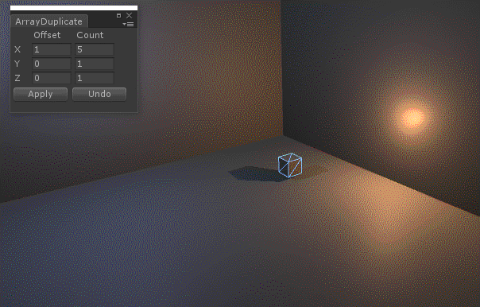

Kelvinator lets you set light colour following the rules of Kelvin colour temperature.
LightManager lets you copy and paste light settings, and create your own presets.

ArrayDuplicate allows you to quickly make mutiple copies of an object at set intervals. Similar to 3dsMax's Array, and Maya's Duplicate Special.